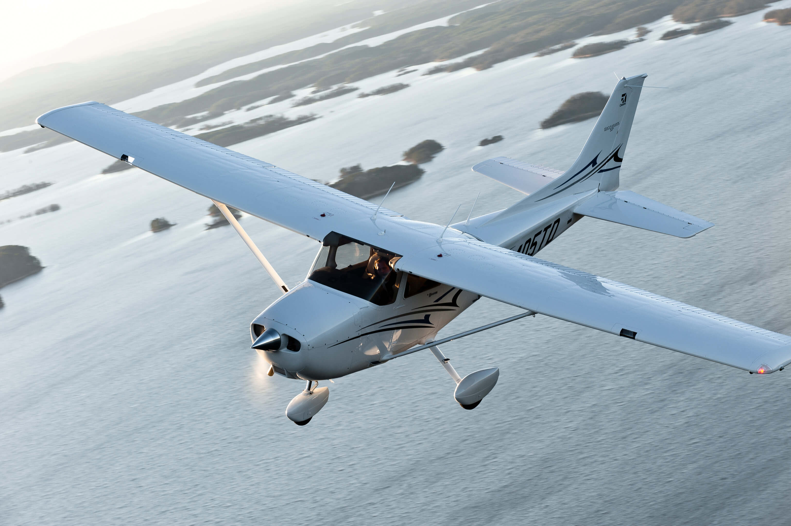

ATR 72 là máy bay vận tải khu vực hai động cơ tuốc bin trục, đường
ngắn được phát triển và sản xuất tại Pháp và Ý bởi nhà sản xuất máy
bay ATR, một thiết kế chung được tạo ra bởi một công ty hàng không vũ
trụ của Pháp và tập đoàn hàng không Ý Aeritalia. Được sử dụng chủ yếu
ở Úc bởi Virgin Regional
Piper Seneca
Piper Seneca là một máy bay hạng nhẹ hai động cơ của Mỹ, do Piper
Aircraft sản xuất từ năm 1971 và vẫn được sản xuất cho đến ngày nay.
Các Seneca chủ yếu được sử dụng cho cá nhân và doanh nghiệp bay.
Dash 8 Q400
Dash 8 Q200, máy bay thực hiện các chuyến bay trong khu vực từ ngắn
đến trung bình (ở Úc với Qantas Link). Kết hợp với động cơ phản lực
cánh quạt hiệu quả cao và sức chứa hành khách hiệu quả về mặt kinh tế
, chiếc máy bay này thường có số giờ bay cao.
Dash 8 Q200
Một máy bay khu vực chủ yếu được sử dụng trên các tuyến đường ngắn ít
phổ biến hơn. Hiệu suất nhiên liệu cao và tuổi thọ dài của máy bay vẫn
tiếp tục được sử dụng cho đến ngày nay. Hiện được thay thế bởi Dash 8
Q400 lớn hơn, mới hơn.
Piper J-3 Cub
Piper J-3 Cub là một máy bay hạng nhẹ của Mỹ được chế tạo từ năm 1937
đến năm 1947 bởi Piper Aircraft. Máy bay có thiết kế đơn giản, nhẹ,
mang lại khả năng xử lý tốc độ thấp và hiệu suất trường ngắn tốt. Hiện
đang phổ biến vì thẻ giá rẻ và dễ sử dụng.
Cessna Skyhawk
Cessna Skyhawk là loại máy bay 4 chỗ ngồi, một động cơ, cánh cao, cánh
cố định của Mỹ do Công ty Máy bay Cessna chế tạo. Lần đầu tiên bay vào
năm 1955, chiếc skyhawk đã được chế tạo nhiều hơn bất kỳ loại máy bay
nào khác.

Cessna Caravan
Cessna Caravan là một động cơ phản lực cánh quạt một động cơ của Mỹ,
thiết bị hạ cánh ba bánh cố định, máy bay vận tải khu vực đường ngắn
và máy bay tiện ích do Cessna chế tạo.
Piper Arrow
Piper Arrow là loại máy bay phổ biến trong học tập sinh viên do đặc
tính bay nhanh và động cơ đơn công suất cao. Một trong số ít máy bay
cùng loại với khả năng thu gọn bánh xe. Dễ dàng nhận biết bằng động cơ
đơn và thiết kế cánh thấp.
Airbus A340
Airbus A340 là một máy bay phản lực chở khách thương mại tầm xa, bốn
động cơ, thân rộng do Airbus phát triển và sản xuất. Hiện đang bị loại
bỏ khỏi nhiều đội bay, chiếc máy bay này được tạo ra để cung cấp các
chuyến bay xuyên Đại Tây Dương tránh các quy định của ETOPS. Những
điều này đã tuyên bố (vào thời điểm đó) rằng máy bay một động cơ phải
có thể hạ cánh trong vòng 60 phút sau khi chuyển sang bay một động cơ.
Các quy tắc này kể từ đó đã được thay đổi và bây giờ là cơ sở cho mỗi
máy bay, với Boeing 787 được đánh giá là 5 giờ rưỡi bay trên một động
cơ.
Boeing 777
Boeing 777 là dòng máy bay phản lực hai động cơ thân rộng tầm xa do
Boeing phát triển và sản xuất. Được bay lần đầu tiên vào năm 1994,
chiếc máy bay này cho phép các tuyến đường như Sydney đến Los Angeles
bay liên tục mà không cần dừng lại. Kể từ đó, nó đã chứng kiến một
cuộc đại tu thiết kế và đại tu động cơ nhằm mở rộng phạm vi hoạt động
hơn nữa, với chuyến bay dự kiến trên chiếc máy bay này từ Sydney đến
London, không ngừng nghỉ.
Airbus A380
Airbus A380 là một máy bay phản lực hai tầng, thân rộng, bốn động cơ
do Airbus sản xuất. Máy bay phản lực thương mại đầu tiên có hai sàn
đáp chiều dài đầy đủ . Được xây dựng để phục vụ các tuyến đường dài
phổ biến để đối phó với nhu cầu ngày càng tăng và nhu cầu về máy bay
lớn hơn trong hoạt động trung tâm và nổi tiếng của ngành hàng không.
Chủ yếu được Emirates sử dụng để thực hiện các chuyến bay đến và đi từ
trung tâm Dubai của họ.
Boeing 747
Boeing 747 là một máy bay phản lực thương mại và máy bay chở hàng thân
rộng của Mỹ , thường được gọi bằng biệt danh ban đầu là "Jumbo Jet".
Chiếc máy bay đã cứu công ty Boeing trong thời kỳ Concorde được coi là
tương lai của du lịch bằng máy bay phản lực. Được phát triển ban đầu
như một chiếc máy bay chở hàng, giá dầu tăng đã chứng kiến sự sụt
giảm của chiếc đồng hồ và sự gia tăng của chiếc Boeing 747. Hiện nay
thế giới đã công nhận Boeing 747. Chiếc máy bay thương mại đầu tiên có
nhiều tầng.
Boeing 737
Boeing 737 là một loại máy bay thân hẹp hai phản lực tầm ngắn đến
trung bình được phát triển và sản xuất bởi Boeing tại Hoa Kỳ. Hiện là
loại máy bay thương mại phổ biến nhất trên thế giới, hoạt động trên
hầu hết các đường bay từ ngắn đến trung bình. Được biết đến với các
cánh nhỏ mang tính biểu tượng, hiệu suất nhiên liệu nổi tiếng và phạm
vi hoạt động của một máy bay phản lực cánh quạt nhỏ.
Airbus A320
Dòng máy bay Airbus A320 bao gồm các máy bay phản lực chở khách thương
mại hai động cơ tầm ngắn đến trung bình, thân hẹp do Airbus sản xuất.
Câu trả lời của Airbus cho hiệu suất vượt trội của dòng Boeing 737 .
Dễ dàng nhận biết bằng thiết bị hạ cánh dài và rada hình bóng đèn .
Boeing 787
Boeing 787 Dreamliner là một máy bay phản lực đường dài, thân rộng cỡ
trung của Mỹ do Boeing sản xuất. Được gọi là “Dreamliner” vì ý định
đầy tham vọng của nó là định nghĩa lại việc di chuyển bằng đường hàng
không với động cơ êm hơn, chuyến bay dài hơn và cabin lớn hơn và sang
trọng hơn . Các công cụ và thiết bị điện tử hiện đại cho phép chiếc
máy bay này có thể bay trước chuyến bay như Perth đến London, với sức
chứa hơn 250 hành khách.
Airbus A330
Airbus A330 là máy bay phản lực hai động cơ thân rộng tầm trung đến
dài do Airbus sản xuất. Chiếc máy bay tầm xa đầu tiên do công ty sản
xuất , chủ yếu được sử dụng để phục vụ các chuyến bay tầm trung với
việc bố trí chỗ ngồi tiết kiệm hơn thiên về hạng phổ thông hơn hạng
thương gia và hạng nhất lớn hơn .
Cánh quạt
Một thiết bị cơ khí để đẩy máy bay, bao gồm một trục quay với ít
nhất hai cánh góc được gắn vào nó.
Động cơ
Một thiết bị dùng để đẩy máy bay. Có thể là động cơ phản lực cánh
quạt, động cơ phản lực cánh quạt hoặc động cơ phản lực.
Động cơ tuốc bin cánh quạt
Một động cơ tuốc bin cánh quạt được thiết kế để tạo ra lực đẩy nhờ
cánh quạt được điều khiển bởi tuabin với lực đẩy bổ sung do khí thải
phía sau thu được.
Động cơ tuốc bin phản lực cánh quạt
Còn được gọi là động cơ tỷ lệ vòng tua cao. Một loại động cơ chạy
ngang trong đó có một quạt lớn được điều khiển bởi tuabin có tác
dụng đẩy không khí về phía sau xung quanh các khí thải để tăng lực
đẩy.
Động cơ tuốc bin phản lực luồng
Động cơ tuốc bin phản lực luồng, trong đó không khí từ khí quyển
được nén để đốt cháy bởi một máy nén chạy bằng tuabin. Không có
buồng bỏ qua.
Gầm xe
Mặt dưới của thân máy bay, thường là nơi cất thiết bị hạ cánh .
Thiết bị hạ cánh
Các bánh xe mà máy bay sử dụng để cất cánh, hạ cánh và giảm tốc độ.
Còn được gọi là gầm xe.
Bộ hạ cánh
Bộ hạ cánh không thể di chuyển hay hạ xuống và thu lại trong chuyến
bay.
Bộ hạ cánh kiểu bánh đà
Bộ hạ cánh thông thường, hoặc bộ hạ cánh kiểu bánh đà, là phần gầm
máy bay bao gồm hai bánh chính hướng về phía trước trọng tâm và một
bánh nhỏ hoặc bánh trượt để hỗ trợ phần đuôi. Thuật ngữ taildragger
cũng được sử dụng, mặc dù một số người cho rằng nó chỉ nên áp dụng
cho những máy bay có đuôi thay vì bánh xe.
Strakes
Một đường gờ nhô ra được trang bị cho máy bay hoặc cấu trúc khác để
cải thiện độ ổn định khí động học.
Cửa thoát hiểm
Cửa dùng cho các trường hợp lên, xuống tàu và các trường hợp khẩn
cấp.
Các lối thoát hiểm ngang
Lối ra dẫn đến đôi cánh. Chỉ được sử dụng trong trường hợp khẩn cấp.
Nơi hành khách tiếp tục ra khỏi mép sau, bằng cách trượt xuống các
cánh mở rộng hoặc bằng cách sử dụng máng trượt sơ tán triển khai khi
lối ra được mở.
Vỏ bọc động cơ
Vỏ được sắp xếp hợp lý bên ngoài máy bay, đặc biệt là động cơ máy
bay.
Chevrons
Một đường hoặc sọc hình chữ V.
Cánh cao
Cánh cao là một cách lắp ráp với các cánh đặt trên đỉnh của thân máy
bay.